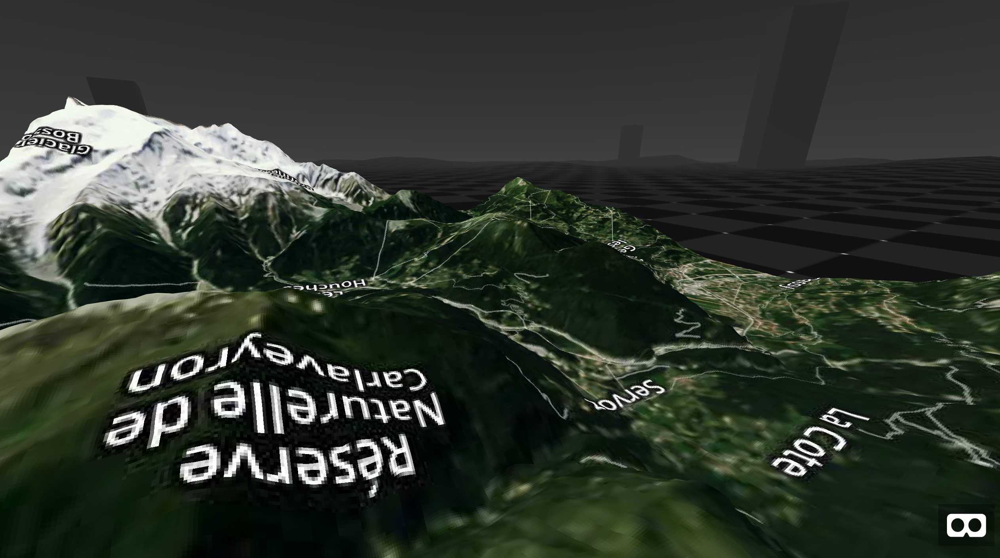

Installation
You can install the g3r from Github:
# install.packages("remotes")
remotes::install_github("JohnCoene/g3r")Prerequisites
All functions require a freely available mapbox API token, by default the function look for the MAPBOX_TOKEN environment variable.
Virtual Reality
There is also the aframer component. Note that we run that as a shiny app as the dependency files require to be served.
library(g3r)
library(shiny)
library(aframer)
library(aenvironment) # github/JohnCoene/aenvironment
browse_aframe(
a_scene(
a_dependency(),
g3r_aframer_dependency(),
aenvironment_dependency(),
a_environment(
environment = aframer::opts_aframe(
preset = "checkerboard"
)
),
a_map()
)
)

Augmented Reality
As Augmented Reality with arframer.
library(g3r)
library(aframer)
library(arframer)
browse_arframe(
a_scene(
a_dependency(),
arframer_dependency(),
g3r_aframer_dependency(),
arjs = "sourceType: webcam; detectionMode: mono_and_matrix; matrixCodeType: 3x3; debugUIEnabled: false;",
a_primitive(
"marker",
list(
a_map(),
type = "barcode",
value = 1
)
),
a_entity(camera = NA)
)
)/1.png)
This will trigger on artoolkit5 barcode 1 (below), open de demo from your mobile and point your camera at it (if you're on iPhone make sure you use Safari).
Augmented Reality Demo